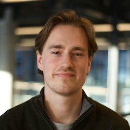

Mitt navn er Elias Goldmann Brandtzæg og jeg er en 23 år gammel gutt fra Oslo. Våren 2023 ble jeg ferdig med bacheloren min i Informatikk: Design, bruk og interkasjon og jeg har nå startet på master i Informatikk: Programmering og systemarkitektur ved UiO. I løpet av studiet har jeg fått god erfaring med både backend-programmering og interkasjonsdesign, med verktøy som Python, Java, Kotlin, SQL, Arduino, Figma, Android Studio, XML. Jeg Jeg har også vært svært aktiv i foreningslivet ved institutt for informatikk (Ifi), der jeg blant annet har vært bedriftskontakt ved Navet, samt gjennopprettet sjakkforeningen ved Ifi. Ved siden av studiet er jeg svært interessert i fotball (United og Lyn), videospill, musikk, sjakk og golf. Gjerne send meg en mail angående jobbsammenheng, eller om du vil utfordre meg i et sjakkparti/runde golf (jeg suger i begge deler) :)
Jeg jobber med et sideprosjekt der jeg har som mål å lage et nettsted der brukere kan ha profiler som viser filmene og TV-seriene de har sett og deres respektive rangeringer. Brukere vil kunne følge hverandre og se vennenes seerhistorie og meninger om forskjellige filmer. Man kan se på Bingers som en blanding av Instagram og IMDB.
Les merJeg har alltid vært interessert i fotball. Lyn er mitt lokale fotballag som jeg har vokst opp med siden jeg var 6 år gammel og jeg er fortsett den dag i dag og støtter laget mitt på kamper. Som et sideprosjekt har jeg forsøkt å designe en ny nettside for Lyns supporterklubb, Bastionen.
Les merI emnet IN2000 utviklet teamet mitt en app for turisme i Oslo. Appen skulle fremheve "lokale" tips for ting å gjøre i vår kjære hovedstad. Oslo - Lokale tips tilbyr informasjon om en rekke restauranter, badeplasser, parker, utesteder, osv. Den vil vise åpningstider, badetemperatur, værvarsling og skreddersydde lister for aktiviter.
Les mer